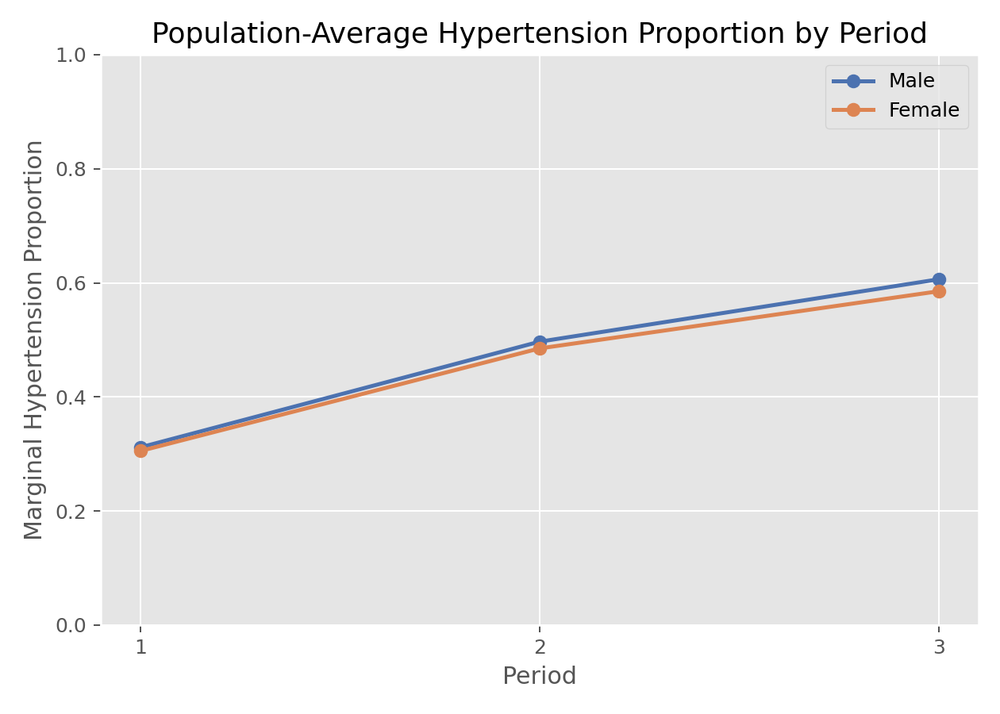

生存分析与纵向数据 · 04·03
广义估计方程
Generalized Estimating Equations, GEE
广义估计方程（Generalized Estimating Equations, GEE）
§1
方法概览
1.1 定义
GEE 是把 quasi-likelihood 思想扩展到相关数据的一类边际模型，重点估计总体平均效应，并通过工作相关结构和 sandwich 方差来处理重复测量相关性。
1.2 它主要解决什么问题
- 研究问题：在重复测量或聚类数据里，协变量对总体平均结局的影响是什么。
- 适用任务：边际均值建模、稳健标准误、重复测量二元或计数结局分析。
- 常见医学场景：多次随访的高血压率、症状发生率、治疗反应比例。
1.3 直觉理解
GEE 不试图给每个人都拟合一条个体曲线，而是更关注“整个总体平均水平如何变化”，并用一个工作相关结构来提高估计效率。
§2
数学形式
2.1 核心公式
$$ \sum_{i=1}^{n} \mathbf{D}_i^\top \mathbf{V}_i^{-1} (\mathbf{Y}_i - \boldsymbol{\mu}_i) = 0 $$
其中
$$ \mathbf{V}_i = \mathbf{A}_i^{1/2} \mathbf{R}_i(\boldsymbol{\alpha}) \mathbf{A}_i^{1/2} $$
2.2 参数或统计量含义
- $\boldsymbol{\mu}_i$：第 $i$ 个主体的边际均值向量。
- $\mathbf R_i(\alpha)$：工作相关矩阵，如 independent、exchangeable、AR(1)。
- sandwich variance：即使工作相关结构写错，也能在大样本下提供稳健推断。
2.3 关键假设
- 均值模型正确是最关键前提。
- 主体之间独立。
- 工作相关结构可以近似指定，不要求完全正确。
§3
数据形式与输入输出
3.1 适合的数据形式
- 自变量类型：时间、处理组、性别、暴露、年龄等。
- 因变量类型：连续、二元或计数型。
- 数据结构：long format 的重复测量或聚类数据。
- 是否适合高维数据：不是默认首选。
- 是否适合缺失较多数据：可用，但需注意缺失机制。
- 是否适合删失数据：不直接处理删失。
- 是否适合重复测量数据：非常适合。
3.2 示例表格
下面是 Framingham_data.csv 中适合 GEE 的 long format 结构：
| RANDID | PERIOD | SEX | PREVHYP |
|---|---|---|---|
| 6238 | 1 | 1 | 0 |
| 6238 | 2 | 1 | 0 |
| 6238 | 3 | 1 | 0 |
| 11263 | 1 | 1 | 1 |
| 11263 | 2 | 1 | 1 |
总体平均层面上，PREVHYP 在不同期别和性别上的观测比例为：
| SEX | PERIOD | mean(PREVHYP) |
|---|---|---|
| 0 | 1 | 0.312 |
| 0 | 2 | 0.497 |
| 0 | 3 | 0.606 |
| 1 | 1 | 0.305 |
| 1 | 2 | 0.485 |
| 1 | 3 | 0.585 |
3.3 输入与产出
输入
- 输入数据：long format 重复测量数据。
- 关键变量：主体 ID、结局、协变量、工作相关结构。
- 需要预处理的内容：长表整理、结局编码、相关结构选择。
产出
- 模型对象/统计结果：边际效应系数、稳健标准误、工作相关参数。
- 参数估计：population-average 效应。
- 预测结果：总体平均概率或均值。
- 不确定性指标：robust / sandwich variance。
§4
适用场景
- 适合：关心 population-average 效应的重复测量分析。
- 不适合：强烈关心 subject-specific 解释或个体预测时。
- 使用前需要特别检查的点：主体 ID、工作相关结构、样本量是否足够大。
§5
实现
常用包：
statsmodels
import statsmodels.api as sm
import statsmodels.formula.api as smf
fit = smf.gee(
"PREVHYP ~ PERIOD + SEX",
groups="RANDID",
data=df,
family=sm.families.Binomial(),
cov_struct=sm.cov_struct.Exchangeable()
).fit()
print(fit.summary())
常用包：
geepack
library(geepack)
fit <- geeglm(
PREVHYP ~ PERIOD + SEX,
id = RANDID,
family = binomial(link = "logit"),
corstr = "exchangeable",
data = df
)
summary(fit)
§6
结果如何解释
- 核心结果看什么：边际平均效应和稳健标准误。
- 每个主要参数如何解释：在总体平均层面，协变量变化如何影响事件概率或均值。
- 临床或医学意义如何表达：GEE 结果更接近公共卫生或人群平均解释。
- 常见误读：GEE 系数通常不同于 GLMM 的条件效应系数。
§7
推荐可视化
- 按时间和分组的边际均值 / 概率折线图。
- 工作相关结构示意图。
- 观测均值和模型拟合均值对比图。
7.1 图像示例
下图按性别和期别展示总体平均高血压比例，这正是 GEE 重点刻画的边际模式。

§8
优势、局限与常见坑
优势
- 对工作相关结构误设更稳健。
- 边际平均效应解释自然。
- 适合公共卫生和群体平均问题。
局限
- 更依赖大样本近似。
- 不提供个体随机效应。
- 不适合强调 subject-specific 预测的问题。
常见坑
- 误把 GEE 系数当成个体层面效应。
- 样本太小却过度依赖稳健方差。
- 工作相关结构选择没有任何依据。
§9
与相近方法的区别
- 和 GLMM 的区别：GEE 是边际模型，GLMM 是条件模型。
- 和 Quasi-Likelihood 的区别：GEE 是其相关数据扩展。
- 和 LMM 的区别：LMM 主要针对连续正态结局。
§10
医学研究中的典型应用
- 随访中高血压比例的总体变化。
- 重复二元结局的群体平均效应分析。
- 聚类数据中的稳健边际回归。
§11
相关方法
§12
参考资料
- Liang KY, Zeger SL. Longitudinal data analysis using generalized linear models. Biometrika. 1986;73(1):13-22.
- statsmodels Developers.
statsmodels.genmod.generalized_estimating_equations.GEE. statsmodels API Reference. https://www.statsmodels.org/stable/generated/statsmodels.genmod.generalized_estimating_equations.GEE.html （访问日期：2026-07-02） - CRAN. Package
geepack. https://cran.r-project.org/web/packages/geepack/index.html （访问日期：2026-07-02）
— 黑盒词典 · 04·03 —